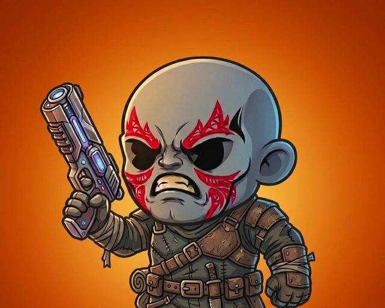
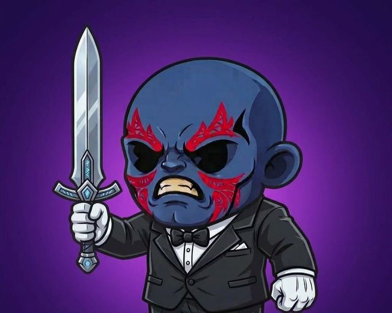
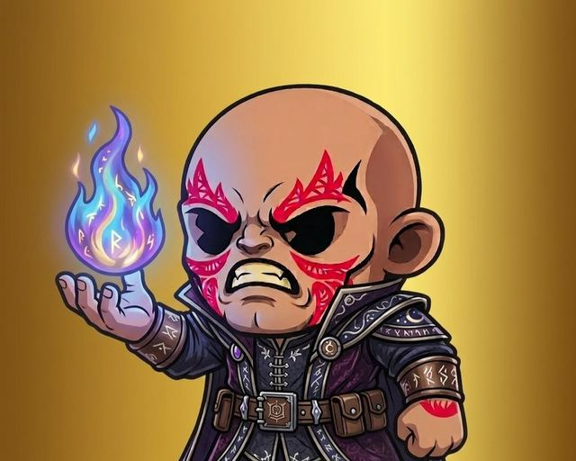
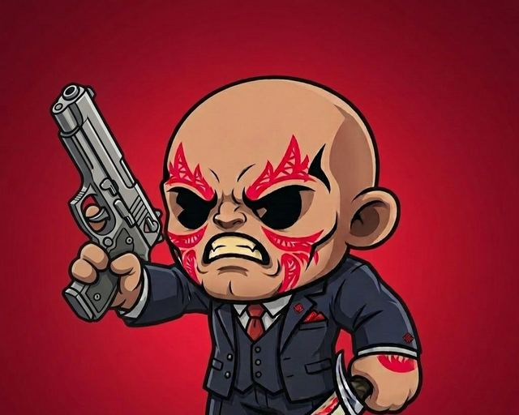
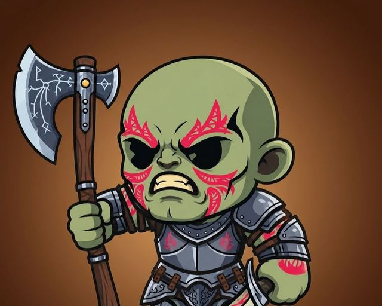
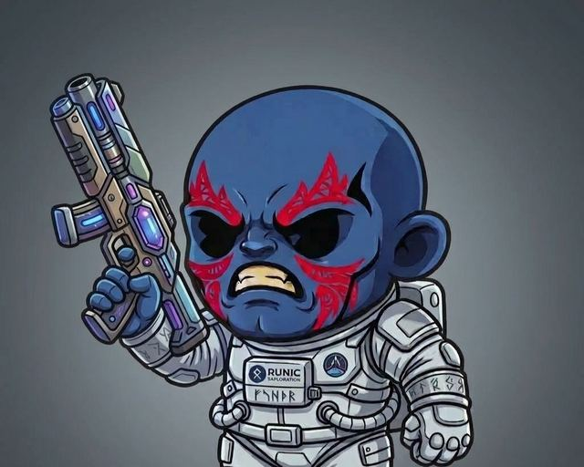

Ashen Raider
A grey-skinned raider in a battered leather harness and bandaged fists, raising a glowing plasma pistol.
1,000 armored protectors of the galaxy, each one unique and stored on-chain. Hold a Guardian to raid to earn, fight in the Battle Arena, stake for rewards and more.
Cosmic Guardians is a collection of 1,000 hand-designed characters, each assembled from over 150 traits. Owning one makes you part of the watch: a community that shapes the story, the art and the rewards together.
Every Guardian has its own skin, outfit and weapon. Here are six of the 1,000.

A grey-skinned raider in a battered leather harness and bandaged fists, raising a glowing plasma pistol.

A blue-skinned guardian in a black tuxedo and bow tie, holding up a runed steel sword.

A mage in a purple robe stitched with runes, holding a blue and violet flame in an open palm.

A sharp-dressed guardian in a navy three-piece suit and red tie, with a silver pistol in one hand and a blade in the other.

A green-skinned warrior in steel plate armor, gripping a rune-etched battle axe.

A blue-skinned guardian in a white rune-marked spacesuit, carrying a multi-barrel energy blaster.
Launch the website, open Discord and X, and start the allowlist.
Allowlist mint, then public mint of all 1,000 Guardians.
Reveal every Guardian, open the holder lounge and start community votes.
Holder rewards, collaborations and the first Guardian story chapters.
1,000, each with its own look, outfit and weapon.
Mint price and date will be announced here and in Discord before the sale opens.
Solana. Details of the contract will be published here before mint.
Holders get access to Raid to Earn, the Battle Arena and staking, plus voting rights on community decisions, the holder lounge, early access to future drops and more to come.
Get on the allowlist and be first to know when minting opens.